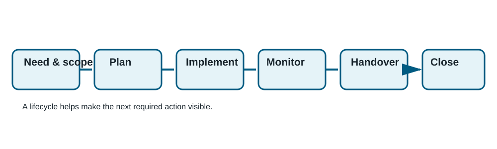
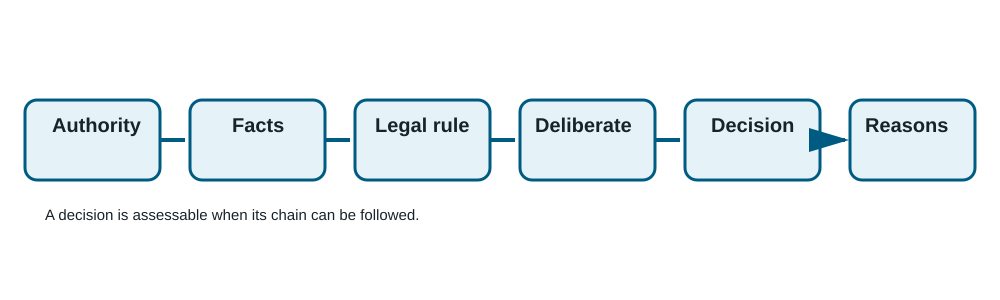
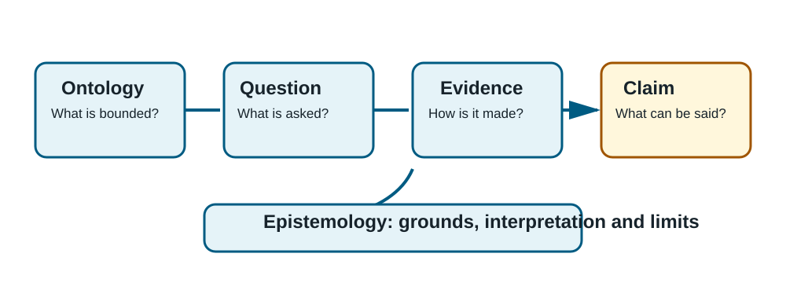
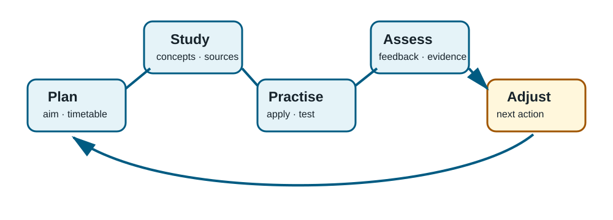
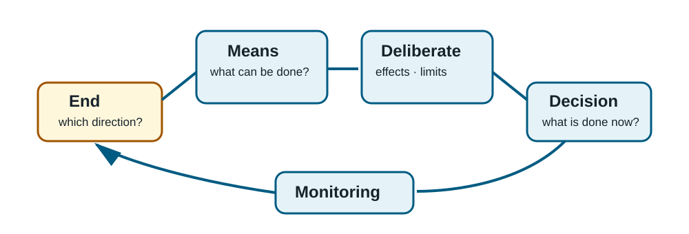

Course premise
The course practises distinguishing observation, interpretation, assumption, measure, legal rule, decision and practical deliberation. Every reflection assignment contains its required starting information.
1. Work Lifecycle, Projects and the Limits of Measurement
27 h
A project is a time-limited whole with a bounded aim, agreed resources and a way to establish what was achieved. Its lifecycle makes the next action visible: need and scope → planning → implementation → monitoring → handover → evaluation and closure. An aim describes a desired change, an output describes what is made, and an outcome describes what follows from use.
A measure describes only an agreed feature. It therefore needs a statement of use: object, collection method, interpretation, limitations and permitted use.

Yellow Corridor project and sources
During the eight-week project, direction questions fell from 11/18 visitors to 4/18. The floor marker remained insufficient for two visitors with visual impairments. The project produces guidance, observation data and a further-action proposal, rather than claiming to have resolved all accessibility.
Espeland & Stevens (1998) examine how comparison is constructed. Porter (2020 [1995]) explains why numerical methods must be opened up.
Reflection: Yellow Corridor statement of use
600–800 words. Describe the lifecycle, distinguish aim, output and outcome, write a statement of use for direction questions and propose an accessibility-related next action. The full starting information is in the English module.
2. Grounds, Authority and the Floating Staircase Case
27 h
A reasoned administrative decision has a traceable chain: authority → established facts → legal rule → deliberation → decision → reasons. A preparer may assemble information and an expert may assess it, but the authorised actor makes the decision. The fictional Foundations Committee is not an authority; the Administrative Procedure Act is used to study concepts.
| Provision | Focus in this module |
|---|---|
| APA 2 | Scope and the question of whether this is an authority matter. |
| APA 6 | Equal treatment, proper purpose, impartiality, proportionality and legitimate expectations. |
| APA 31 | The duty to obtain adequate and appropriate information. |
| APA 34 | The party’s opportunity to comment before resolution. |
| APA 44–45 | The contents and reasoning of a written decision. |

What is the Floating Staircase case?
Applicant Aava asks the fictional Corridor Authority for a permit for a cable-suspended three-step platform. A manufacturer calls it stable, while the inspector observes that its first step sways when two people use it. Aava has not seen the inspector’s memorandum; the unit director has decision-making authority.
The primary source is the Administrative Procedure Act. KHO:2024:117, KHO:2025:13 and KHO:2025:79 provide real examples of the relevant principles.
Reflection: reasoning map for the Floating Staircase
700–900 words. Map authority, facts, legal rule, deliberation, possible outcome and reasons. Explain required investigation and hearing, then draft a heading-level decision document. Do not decide the permit or assess building safety.
3. Ontology, Epistemology and Questions in Philosophy of Science
27 h
Ontology asks what a phenomenon is and what belongs to it. Epistemology asks on what grounds we can form knowledge of it. If “successful arrival” is the subject, we must decide whether it concerns waiting time, intelligibility, accessibility or their relationship before selecting evidence.
Evidence does not speak by itself. A questionnaire, instrument, classification and time period affect what can be visible. This calls for a description of method, interpretation and the limits of the claim. Practical objectivity means that claims can be assessed by others through visible evidence and reasons.

Evidence example and sources
At the Waiting Room Knowledge Centre, waiting time fell from 12 to 8 minutes, 14/20 respondents found the instruction clear, and 3/25 visitors asked for directions. These materials describe different features rather than one automatic success.
Goertz & Mahoney (2012) distinguish concepts from measures. Bogen (2014) explains theory and observation. Douglas (2016) examines scientific objectivity.
Reflection: three claims at the Waiting Room Knowledge Centre
800–1,000 words. Bound the phenomenon, distinguish observation, interpretation and assumption, assess claim limits, propose two additional materials and write a precisely bounded conclusion.
4. The University of Applied Sciences as an Environment and the Study Process
27 h
A University of Applied Sciences is an environment for degree-oriented study, assessment, study entitlement and shared ways of working. Students plan progress, practise expert skills, use feedback and act with others. A useful recurring study process is plan → study → practise → assess → adjust.
Lectures and recordings provide an overview; reading refines concepts; discussion makes thinking visible; case and project work practise application; feedback and self-assessment guide the next stage. Methods serve different learning tasks and do not guarantee learning on their own.

Student status and sources
The Constitution, Universities of Applied Sciences Act and Non-discrimination Act form part of the legal framework. Institutional instructions, degree regulations and rules of order specify daily practice. This demonstration course does not provide individual legal advice.
Prince (2004) reviews research on active learning. Garrison, Anderson & Archer (2000) structure online learning through cognitive, social and teaching presence.
Reflection: Sini’s four-week study plan
700–900 words. Make a plan for nine study hours per week, select four learning methods, use peer feedback, identify appropriate sources for assessment and study practices, and write a self-assessment outline.
5. Deliberation, Means and Aristotle’s Question
27 h
Aristotle writes in Nicomachean Ethics III.3: “we deliberate not about ends, but about the means.” An end gives direction, while deliberation compares means available to the actor. A good comparison considers fit with the end, feasibility, distribution of harms and benefits, and monitoring.
Deliberation is not scorekeeping. A justified next step names the phenomenon, evidence, alternatives, chosen means, uncertainty and monitoring condition. This allows a decision to be reopened when observations change the situation.

Quiet Workshop case and sources
At the Quiet Workshop, 10/30 visitors asked for directions, three used screen-reader software and some users found afternoon conversation disruptive. The choices are printed signs, an accessible online route and a quiet hour. No choice answers all observations alone.
Aristotle, Nicomachean Ethics III.3 is the source text on deliberation. Broadie (1991) discusses practical deliberation in Aristotle’s ethics.
Reflection: Quiet Workshop proposal
900–1,100 words. Use the quotation to explain deliberation about means, bound the phenomena, compare options A–C, make a recommendation and write three statements of use plus a four-week review point.